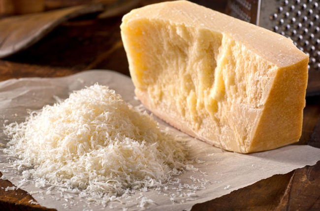
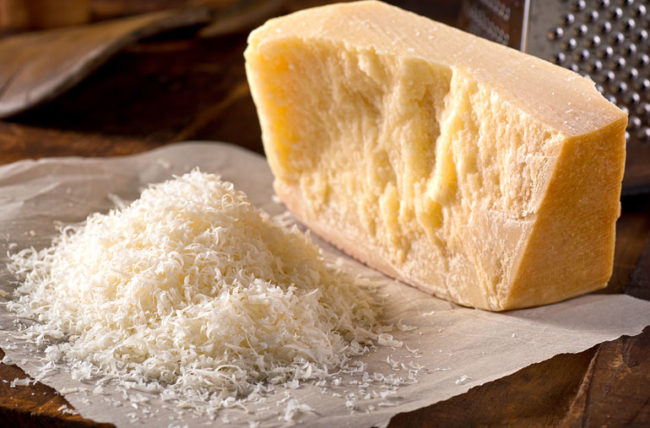

Main Course: Rigatoni Alla Vodka
Step 1
Put a large skillet over a medium flame and heat the oil. Add the onions, garlic and red pepper flakes and sauté until the onions are softened and have developed some color. About 5 minutes.
Step 2
Add the tomato paste to the pan and sauté until incorporated.
Step 3
Add in the vodka and cook until you can no longer smell alcohol, about 1 minute.
Step 4
Stir in the butter and cheese until the butter has melted and the sauce has thickened slightly. Turn the flame down to low while the pasta cooks.
Step 5
Drop the pasta into generously salted boiling water and cook until al dente. scoop out about 1/2 cup of pasta cooking water and set aside.
Step 6
Drain the pasta and add it to the pan. Toss over high heat for 1-2 minutes until the pasta is totally coated in sauce.
Step 7
Serve immediately and enjoy!
 



3 garlic cloves, minced
2 tablespoons extra virgin olive oil
1 cup grated parmigiano reggiano cheese
1 small red onion, cut into a 1/4 inch dice
1 teaspoon red pepper flakes (use 1/4 teaspoon if you like it less spicy)
4 ounces tomato paste
3/4 cup vodka
4 tablespoons salted butter
1 cup dried rigatoni pasta